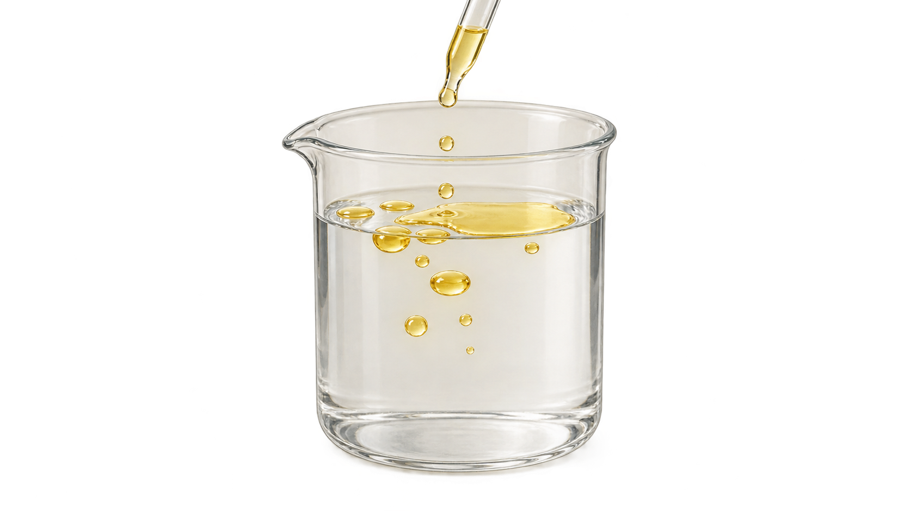
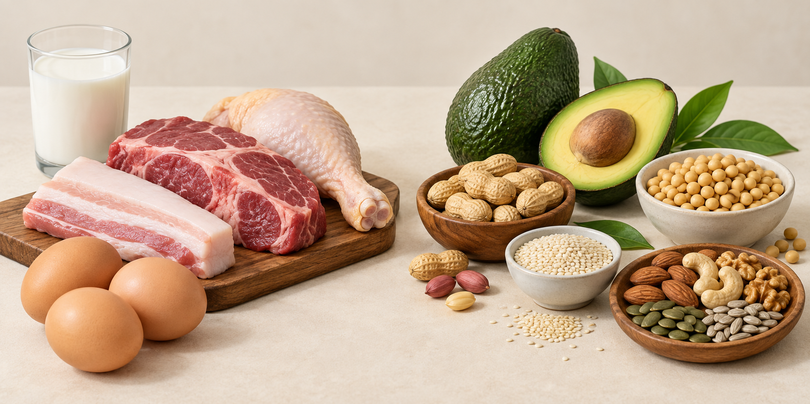

Dầu không hòa tan vào nước. Nổi thành lớp riêng trên mặt nước.
Mỡ dự trữ năng lượng lâu dài trong các mô mỡ dưới da và nội tạng.
Phospholipid tạo nền tảng màng tế bào, tự xếp thành lớp kép trong nước.
Steroid tham gia cấu trúc và điều hòa sinh lí, có khung bốn vòng carbon.

Thao tác: Bấm nút "Nhỏ dầu" để quan sát sự tách pha dầu – nước
• Lipid có những đặc điểm cấu tạo nào?
• Đặc tính không tan trong nước và cấu trúc riêng của từng loại lipid liên quan đến vai trò của chúng ra sao?
Ở module trước, carbohydrate có thể cung cấp năng lượng, dự trữ năng lượng hoặc tạo cấu trúc.
Bấm vào từng ô ở cột bên trái để quan sát kĩ từng tình huống, sau đó trả lời câu hỏi:
Bấm nút "Nhỏ dầu" để quan sát phản ứng phân tách pha giữa dầu và nước trong cốc thủy tinh.
Trước hết, hãy tìm hiểu cấu tạo của loại lipid thường gặp trong dầu và mỡ: Triglyceride.

Kéo hoặc bấm chọn để ghép ba acid béo vào ba vị trí của glycerol ở hình bên trái.
Quan sát hai mạch carbon ở cột trực quan bên trái và chọn cấu trúc có liên kết đôi C=C:
Quan sát cụm mạch thẳng (Nhóm 1) và cụm mạch gấp khúc (Nhóm 2) trên hình trực quan:
Bấm chọn thực phẩm rồi bấm vào khay thích hợp (Động vật hoặc Thực vật) để phân loại:
Cùng dự trữ năng lượng, nhưng cách dự trữ không giống nhau. So sánh hạt glycogen kèm nhiều phân tử nước (trái) với giọt triglyceride trong tế bào mỡ gần như không kèm nước (phải):
Quan sát lát cắt đơn giản qua da: da ở ngoài, lớp mỡ dưới da ở giữa, mô sâu bên dưới.
Một số vitamin không tan tốt trong nước mà tan trong dầu mỡ.
Quan sát hình ảnh lạc đà và bướu được phóng đại thành cấu trúc mô:
Ghép các thành phần tách rời (1 nhóm phosphate, 2 acid béo) vào khung glycerol ở hình bên trái:
Để đầu ưa nước tiếp xúc với nước và đuôi kị nước tránh nước trong môi trường tế bào:
Quan sát màng sinh chất: xen giữa lớp kép phospholipid là các phân tử protein màng.
Quan sát ba cấu trúc chưa gắn tên bên trái: cholesterol, testosterone, estrogen:
Quan sát sơ đồ hai nhánh xuất phát từ cholesterol trên hình trực quan:
Testosterone và estrogen là các hormone steroid tham gia điều hòa sự phát triển, sinh sản và nhiều đặc điểm sinh lí.
Lipid còn gồm sáp, một số sắc tố và một số vitamin:
Bấm chọn Phân tử ở cột 1, chọn Đặc điểm cấu trúc ở cột 2, rồi chọn Vai trò ở cột 3 để tạo liên kết bộ ba:
Đặc tính không tan trong nước và cấu trúc riêng của từng loại lipid tạo nên những vai trò nào? (Chọn đúng 3 ý):
Dựa trên kiến thức về lipid, hãy chọn nhận định phù hợp nhất về chế độ ăn uống:
Protein được cấu tạo như thế nào để có thể thực hiện nhiều chức năng khác nhau trong tế bào?
Bạn đã hoàn thành xuất sắc module Lipid – Kị nước, dự trữ năng lượng và cấu tạo màng theo đúng chuẩn chương trình Sinh học 10.